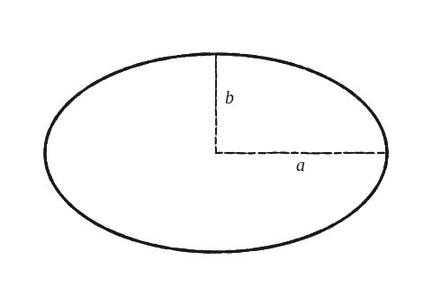
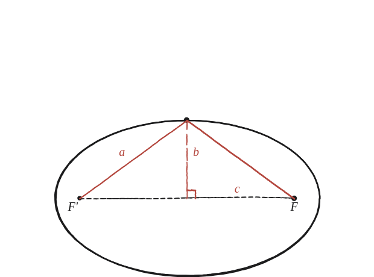

Si una el·lipse té radi llarg a i radi curt b, on són els seus focus?

Un punt, no tota la corba
No cal treballar amb un punt genèric de l'el·lipse: n'hi ha prou de triar el punt més fàcil de tots —l'extrem de l'eix curt (el punt més alt)— i calcular-hi la distància als dos focus.
Per simetria, les dues distàncies són iguals
Des del punt més alt de l'el·lipse, les distàncies als dos focus són iguals per simetria —el punt és exactament sobre l'eix que reflecteix un focus sobre l'altre. Com que aquestes dues distàncies han de sumar la constant focal 2a, cadascuna val exactament a.

El triangle rectangle amagat
La línia des del centre fins al punt més alt (llargada b, l'eix curt) i la línia des del centre fins a un focus (llargada c, encara desconeguda) formen un angle recte —tots dos són sobre els dos eixos de simetria de l'el·lipse, perpendiculars entre si. Aquestes dues línies, més el segment del focus al punt més alt (llargada a, ja trobada), formen un triangle rectangle amb catets b i c i hipotenusa a.
Pitàgores, i aïllar c
Amb hipotenusa a i catet b: a² = b² + c², és a dir, c² = a² − b². Els focus són, doncs, a distància √(a²−b²) del centre, sobre l'eix llarg.
c² = a² − b², amb c la distància del centre a cada focus. Surt de calcular la distància al punt més alt de l'el·lipse (que val exactament a, per simetria i per la constant focal), i aplicar Pitàgores al triangle rectangle que formen aquesta distància, l'eix curt (b) i la distància al focus (c).
Comprovació
a=5, b=3: c²=25−9=16, c=4. Comprovat amb el punt (0,3): distància a cada focus (±4,0) és √(16+9)=5, i 5+5=10=2a.